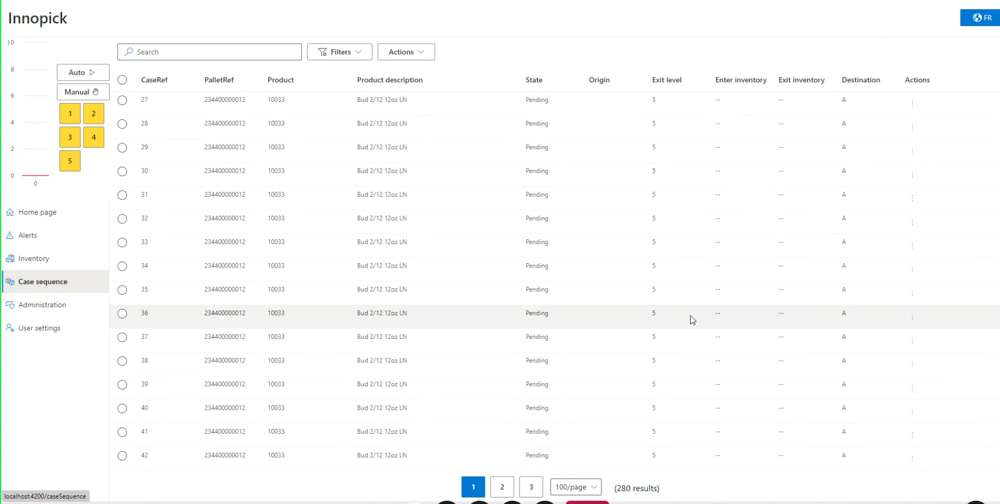
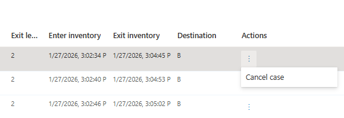
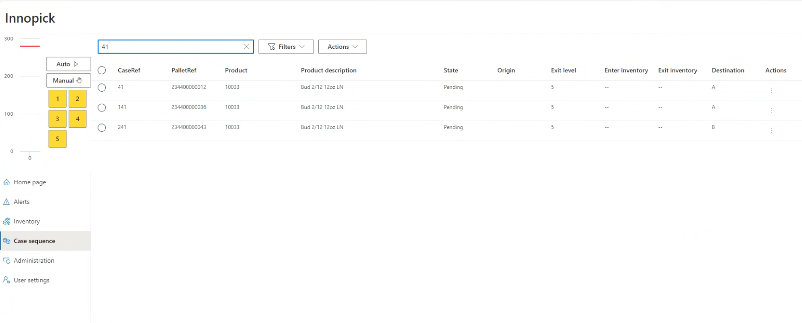

Case Sequence Page¶
Home > Main Screens > Case Sequence
Overview¶
The Case Sequence page displays the order in which cases will exit InnoPick and arrive at the palletizers. This powerful tool allows operators to track individual cases, verify sequencing, and troubleshoot order fulfillment issues.

Understanding the Case Sequence¶
The case sequence represents: - The exact order cases will exit InnoPick (per level) - Which cases belong to which customer pallets - Current status of each case (pending, in progress, completed, cancelled) - Which downstream destination each case is destined to
This information is critical for: - Verifying correct order fulfillment - Tracking specific cases or pallets - Troubleshooting sequencing issues - Monitoring production progress
Case Sequence Columns¶
Each case in the sequence has the following information:
Case Ref¶
- Internal case tracking number
- Unique identifier for each individual case
- Used for detailed case tracking and troubleshooting
PalletRef¶
- Pallet ID for the customer pallet this case belongs to
- Multiple cases with the same PalletRef are part of the same order
- Useful for tracking pallet completion
Product¶
- SKU code of the product
Product Description¶
- Configured product name
State¶
Cases progress through these states:
- Pending: Case is scheduled but not yet scheduled
- In Progress: Case is scheduled, which means currently visible on the sequence conveyor as an empty or full square (output case).
- Completed: Case has been successfully output from InnoPick
- Cancelled: Case has been removed from the sequence (see Actions below)
Origin¶
- Pallet ID of the replenishment that brought this case into InnoPick
- Tracks the source of the case
- Useful for tracing product batches or investigating quality issues
Exit Level¶
- The InnoPick level the case is assigned to
- Indicates which physical level will output this case
Enter Inventory¶
- Date and time the case entered InnoPick
- Useful for tracking case age and identifying stale inventory
Destination¶
- Which downstream equipment will receive the case
- Typical values: Merge A, Merge B, or other merge point designation
- Used by InnoPick to route cases correctly
Actions¶
The only action available on this page is:
-
Cancel Case¶
 - Removes the case from the active sequence
- Changes state to "Cancelled"
- Warning: During normal operations, it should not be necessary to cancel cases from the case sequence. This should only be done as part of a larger recovery effort in coordination with system experts or remote support.
Using Search and Filters¶

The Case Sequence page becomes particularly powerful when filters are applied.
Search Bar¶
Use the search bar to quickly find cases by: - Case reference number - Pallet ID - Product SKU - Product description - Any keyword in the displayed fields
Common Filtering Scenarios¶
Find All Cases for a Specific Pallet¶
- Enter the Pallet ID in the search bar
- All cases for that pallet will be displayed
- Verify the sequence is correct
- Check that all expected cases are present
Find Cases by Level¶
- Filter by Exit Level
- See all cases scheduled for a specific level
- Useful for level-specific troubleshooting
Find Cancelled Cases¶
- Filter by State = Cancelled
- Review which cases have been removed from sequence
Find Cases from a Specific Replenishment¶
- Search or filter by Origin (Pallet ID of replenishment)
- See all cases from that replenishment
- Useful for tracking product batches or investigating quality issues
Find Cases by Destination¶
- Filter by Destination (Merge A, Merge B, etc.)
- Verify routing is correct
Using Case Sequence for Troubleshooting¶
Tracking a Missing Case¶
If a case doesn't arrive at the palletizer when expected:
- Search for the case by Pallet ID or Case Ref
- Check the State:
- Pending: Still waiting to be processed (or was somehow missed because of a system glitch)
- Often, a pending case indicates the system is still waiting for a replenishment to provide that case
- In Progress: On conveyor or in lane - check Home Page Inventory Graph
- Completed: InnoPick released it - check downstream tracking
-
Cancelled: Was removed - determine why
-
Verify the case details:
- Correct product?
- Correct destination?
-
Correct level?
-
Take appropriate action based on findings.
- If a case is stuck in pending mode and no replenishment for that product is on its way, contact support.
Verifying Pallet Completion¶
To confirm all cases for a pallet have been output:
- Search for the Pallet ID
- Check the State of all cases:
- All should be "Completed" for a finished pallet
- If any are Pending or In Progress, pallet is not complete
- A pending case usually indicates the system is still waiting for a replenishment to provide that case
- Note any Cancelled cases
Investigating Sequencing Problems¶
If cases are arriving in wrong order:
- Compare actual sequence to expected order
- Filter by Exit Level and Destination
- Check for:
- Cases from wrong level
- Cases routed to wrong destination
- Cancelled cases affecting sequence
- Correct the sequence if sequence is incorrect.
- If InnoPick appears to be building an incorrect sequence, or the sequence in InnoPick does not match that of MixMaster, contact support.
Related Topics¶
- Home Page Inventory Graph - Visual representation of In Progress cases
- Replenishments - Source of cases entering sequence
Navigation: ← Inventory Section | Next: Administration →